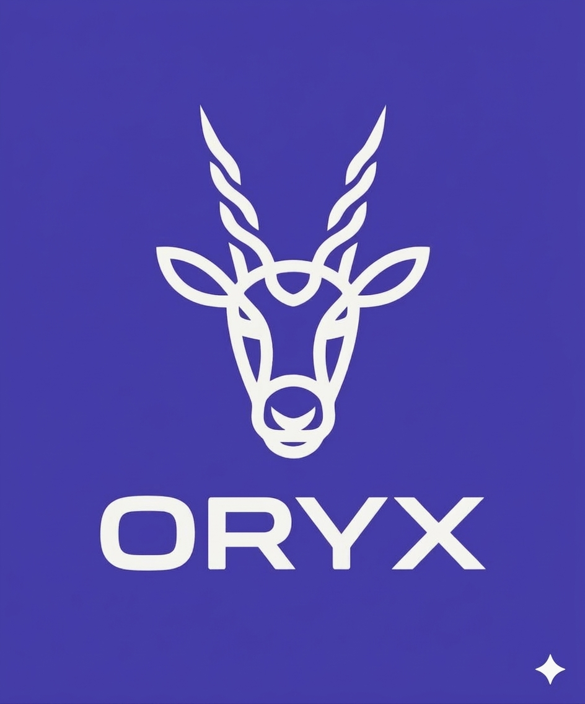

Notre mission est de le révéler à travers des expériences digitales qui inspirent confiance et créent de la valeur.
ORYX est une agence de communication digitale spécialisée dans le branding, le design graphique, le développement web et le marketing digital. Nous accompagnons les entreprises, entrepreneurs et organisations dans la construction d'une présence digitale moderne, cohérente et performante.
Aujourd'hui, une identité visuelle incohérente, un site peu performant ou une communication sans stratégie peuvent limiter la croissance d'une entreprise. Nous transformons ces défis en opportunités.
Chaque projet débute par une phase d'écoute et d'analyse. Nous concevons ensuite des solutions sur mesure alliant créativité, stratégie et technologies modernes afin d'obtenir un résultat aussi esthétique qu'efficace.
Chaque détail compte.
Des solutions originales et adaptées.
Des outils et méthodes actuels.
Une collaboration fondée sur l'écoute.
Des engagements tenus.
L'oryx est un symbole d'élégance, de résilience et d'adaptation. Ces qualités reflètent notre manière de concevoir chaque projet : avec précision, créativité et ambition, pour bâtir des marques capables de se distinguer dans un environnement numérique en constante évolution.
Chez ORYX, nous ne créons pas simplement des designs ou des sites web.
Nous concevons des expériences qui renforcent votre crédibilité, valorisent votre image et accompagnent durablement votre croissance.